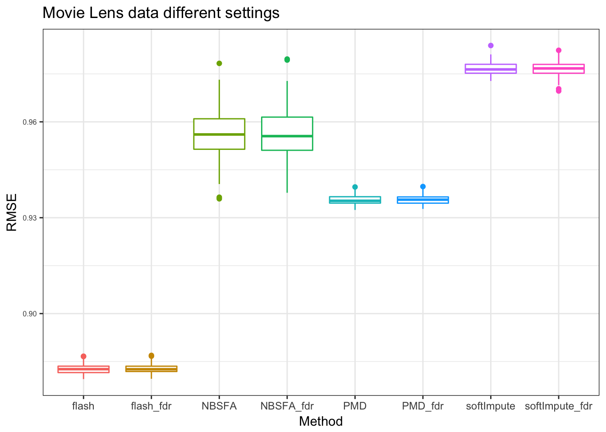
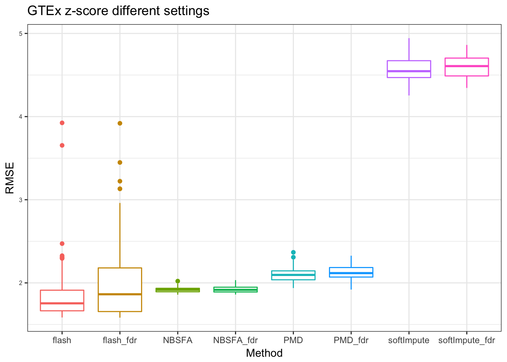

Last updated: 2017-12-04
Code version: 930f740
library(ggplot2)
plot_res = function(output,title = "data",legend_position = "none"){
rmse = as.vector(output)
N = dim(output)[1]
methods = rep(c("flash_fdr","flash","NBSFA_fdr","NBSFA","PMD_fdr","PMD","softImpute_fdr","softImpute"), each = N)
df = data.frame(RMSE = rmse, Method = methods )
p<-ggplot(df, aes(x=Method, y=RMSE, color=Method)) +
geom_boxplot()+
# geom_violin()+
ggtitle(title) + theme_bw()+
theme(legend.position= legend_position, legend.text=element_text(size=15), axis.text.y = element_text(size =6))
p
}
data1 = readRDS("../data/cmpOptions/ML100K/FDRnocheck_box.rds")
data2 = readRDS("../data/cmpOptions/ML100K/box_defaultseeting.rds")
data1 = matrix(as.numeric(data1),ncol = 4)Warning in matrix(as.numeric(data1), ncol = 4): NAs introduced by coerciondata2 = matrix(as.numeric(data2),ncol = 4)Warning in matrix(as.numeric(data2), ncol = 4): NAs introduced by coercionpM = plot_res(cbind(data1[,1],data2[,1],
data1[,2],data2[,2],
data1[,3],data2[,3],
data1[,4],data2[,4]),"Movie Lens data different settings")
pMWarning: Removed 120 rows containing non-finite values (stat_boxplot).
We run the experiments twice. flash_fdr NSFA_fdr PMD_fdr and softImpute_fdr stand for the results from the simulation data set with FDR method and without Nullcheck in FLASH method. And flash NSFA PMD and softImpute represent the results from simulation data set with default setting (shrink, normal with Nullcheck) in FLASH.
data1 = readRDS("../data/cmpOptions/GETxZscore/FDRnocheck_box.rds")
data2 = readRDS("../data/cmpOptions/GETxZscore/DefaultSetting_box.rds")
data1 = matrix(as.numeric(data1),ncol = 4)Warning in matrix(as.numeric(data1), ncol = 4): NAs introduced by coerciondata2 = matrix(as.numeric(data2),ncol = 4)Warning in matrix(as.numeric(data2), ncol = 4): NAs introduced by coercionpG = plot_res(cbind(data1[,1],data2[,1],
data1[,2],data2[,2],
data1[,3],data2[,3],
data1[,4],data2[,4]),"GTEx z-score different settings")
pGWarning: Removed 84 rows containing non-finite values (stat_boxplot).
sessionInfo()R version 3.3.0 (2016-05-03)
Platform: x86_64-apple-darwin13.4.0 (64-bit)
Running under: OS X 10.12.6 (unknown)
locale:
[1] en_US.UTF-8/en_US.UTF-8/en_US.UTF-8/C/en_US.UTF-8/en_US.UTF-8
attached base packages:
[1] stats graphics grDevices utils datasets methods base
other attached packages:
[1] ggplot2_2.2.1 workflowr_0.4.0 rmarkdown_1.6
loaded via a namespace (and not attached):
[1] Rcpp_0.12.12 rstudioapi_0.6 knitr_1.17 magrittr_1.5
[5] munsell_0.4.3 colorspace_1.3-2 rlang_0.1.2 stringr_1.2.0
[9] plyr_1.8.4 tools_3.3.0 grid_3.3.0 gtable_0.2.0
[13] git2r_0.19.0 htmltools_0.3.6 yaml_2.1.14 lazyeval_0.2.0
[17] rprojroot_1.2 digest_0.6.12 tibble_1.3.3 evaluate_0.10.1
[21] labeling_0.3 stringi_1.1.5 scales_0.4.1 backports_1.1.0 This R Markdown site was created with workflowr